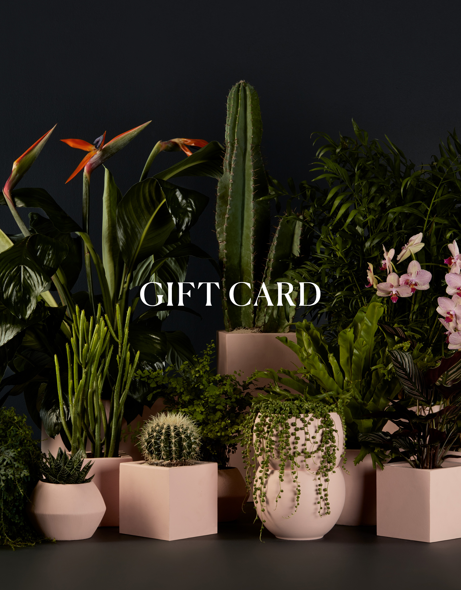

Os favoritos dos fãs
Mais complexas
Fáceis de cuidar
O que você busca?

Procurando flores?
As plantas com flores são lindas, mas dão mais trabalho do que as que não florescem. Saiba como cuidar delas.

Procurando suculentas?
Uma janela ensolarada é tudo o que as suculentas precisam. Essas plantas lindas e resistentes são muito fáceis de cuidar.
Elas crescem muito rápido.
Não perca nada. Cadastre-se para receber notícias e atualizações.

Dê plantas de presente
As plantas são um ótimo presente, assim como as flores, mas duram muito mais. Com um vale-presente para trocar por uma planta em vaso, você pode dar um toque de vida à casa, ao escritório ou ao quarto de qualquer pessoa. Eles estão disponíveis em vários valores, e o envio é gratuito!